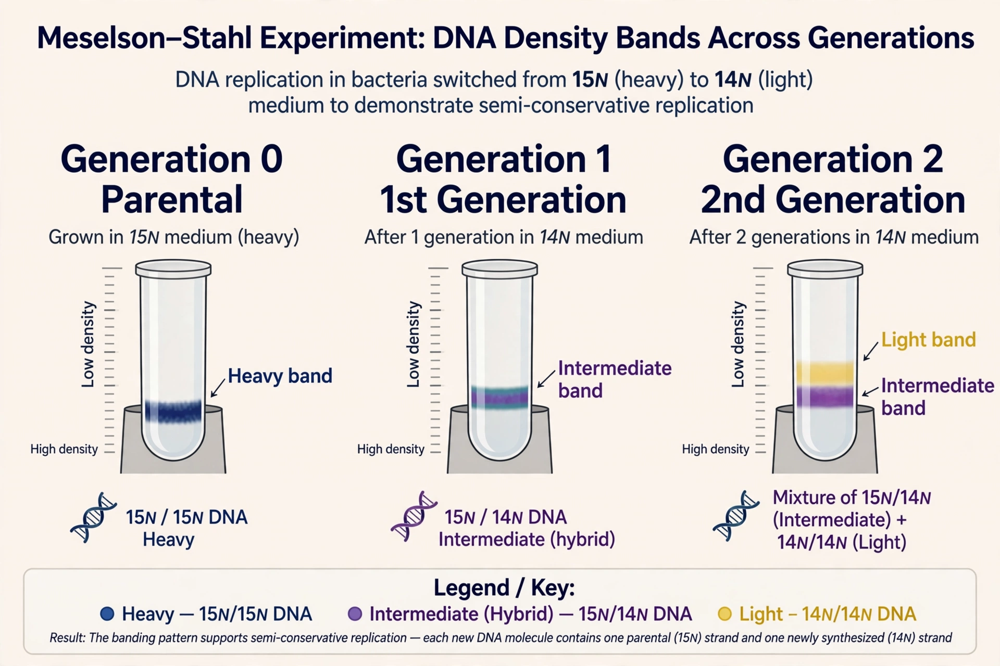

From Wikipedia, the free encyclopedia
| Meselson–Stahl experiment | |
|---|---|
 The pattern of bands across generations matched semiconservative replication | |
| Conducted | 1958 |
| Investigators | Matthew Meselson and Franklin Stahl |
| Institution | California Institute of Technology |
| Organism | Escherichia coli |
| Result | DNA replication is semiconservative |
The Meselson–Stahl experiment was an experiment by Matthew Meselson and Franklin Stahl, reported in 1958, which demonstrated that DNA replication is semiconservative: each daughter double helix consists of one strand inherited from the parent molecule and one newly synthesised strand. It has often been called "the most beautiful experiment in biology" and provided decisive support for the Watson–Crick model of DNA.
After the double helix structure was proposed in 1953, three models of replication competed: conservative (the parental helix stays intact and an entirely new helix is made), semiconservative (each daughter helix keeps one parental strand), and dispersive (parental material is scattered through both strands of each daughter). Distinguishing them required a way to label old and new DNA — accomplished by growing bacteria on heavy nitrogen.
Meselson and Stahl grew E. coli for many generations in a medium whose only nitrogen source was the heavy isotope 15N, so that all the DNA became "heavy". The bacteria were then transferred to a medium containing ordinary 14N, and samples were taken after each generation. DNA was extracted and spun in a caesium chloride density gradient (equilibrium density-gradient centrifugation), where it forms a band at the position matching its density.
Exactly the pattern predicted by semiconservative replication: after one round every molecule is a hybrid, and thereafter half the molecules remain hybrid while half are entirely light. The paper, "The Replication of DNA in Escherichia coli", appeared in the Proceedings of the National Academy of Sciences in July 1958.
The experiment was among the first to apply physical labelling techniques to a central question of molecular genetics, and it cemented the double helix as a working model of heredity. Meselson and Stahl's use of isotope density labelling of nucleotides became a template for later pulse-labelling experiments throughout molecular biology.